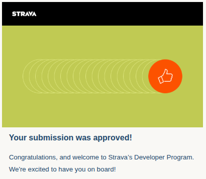
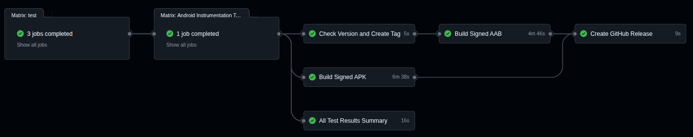
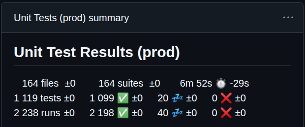
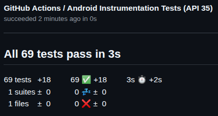

Research-Grade GPS Analysis in Your Pocket
Wavelet-based signal processing, synchronized multi-chart visualization, route drawing with elevation profiles, offline terrain tile elevation, multi-format file conversion, and Strava sync — all running locally on your Android device.
Powerful Features
From wavelet-based noise reduction to interactive route drawing — built for serious outdoor analysis
Wavelet-Based Signal Processing
- FFT-based frequency domain analysis with adaptive window sizing
- Multiple window functions: Triangular, Hanning, Gaussian
- 85-95% GPS noise reduction with signal-to-noise ratio awareness
- Multi-stage derivative extrema detection for peaks and valleys
- Handles irregular GPS sampling intervals and data gaps
- Activity-aware configs: Alpine Skiing, Trail Running, and more
Multi-Chart Visualization
- Three display modes: Single, Split, and Multi-Chart view
- Altitude, speed, trend boundaries, and scatter plots
- Dual domain support: Time-based and Distance-based analysis
- Cross-chart selection sync — tap one, all update
- Pinch-to-zoom, pan, and custom marker tooltips
- 8 adjustable segment detection parameters via settings dialog
Interactive Mapping
- Real-time chart-to-map and map-to-chart synchronization
- Gradient color-coded polylines for speed, altitude, and segments
- Two-finger map rotation with tappable compass reset
- Animated pulsating markers with geographic bearing arrows
- Haversine nearest-point detection with 30dp screen threshold
- Scale bar overlay and automatic night mode
Drawing Mode & Route Creation
- Tap-to-place vertices or freehand draw with automatic stroke simplification
- Catmull-Rom spline smoothing with adjustable tension and detail sliders
- Drawing Tools dialog for curve smoothing, freehand, and elevation sampling settings
- Undo/redo vertex placements with live distance pill overlay
- Real-time elevation profile mini-chart on the map canvas
- Join drawn route to an existing GPX track and save as one file
Heatmap Overlay & Elevation Data
- Color-coded grid overlay showing density or mean elevation per cell
- Dynamic grid adapts to zoom level with stable rendering during pan
- 4-state source filter: All Sources, API, GPX Track, or Terrain Tile
- Offline elevation via AWS Terrain Tiles (~30m resolution) with 3-layer cache
- Multi-zoom tile fallback cascade (z15 → z14 → z13) fills all data voids
- Tile boundary overlay, blind spot detection with red polygon warnings, and per-zoom cache management
Multi-Format File Management
- Import GPX, TCX, KML, KMZ, GeoJSON, FIT, and CSV with multi-file selection
- Android "Open With" integration — tap any track file to open it directly
- Convert between formats with automatic field mapping for 18+ data fields
- Compatibility matrix shows exactly what each format keeps before export
- Activity type and format filtering with persistent preferences
- Date-range filters: 7/14/30 days, this/last month, or custom range
- Automatic reverse geocoding, map thumbnails, and sort by date/name/size
Statistical Analysis
- Dual-mode statistics: track-wide continuous and segment-based
- Altitude gain/loss, distance, speed, gradient, and duration
- Coherent trend segment identification (ascent, descent, flat)
- Accuracy metadata propagation through all calculations
- Domain-isolated cumulative stats preventing cross-domain contamination
Performance & Architecture
- 17-module clean architecture with strict dependency inversion
- L1/L2/L3 multi-level caching with LRU eviction and lazy evaluation
- Domain-isolated multi-level cache with per-slot isolation
- RxJava async pipelines on dedicated I/O and computation thread pools
- O(n) off-main-thread polyline color computation
- Baseline profiles for faster startup, smoother scrolling, and chart rendering
- Edge-to-edge display on Android 15+ and tablet layout optimization
Privacy & Security
- All GPX data processed locally — nothing leaves your device
- Secure handling of all sensitive data
- Minimum app version enforcement with automatic update prompts
- Mandatory privacy policy acceptance flow with update detection
- GDPR-compliant, no tracking, no data collection
Strava Developer Program
- Full OAuth 2.0 with automatic 6-hour token refresh cycles
- Scope validation ensuring read and activity:read permissions
- Cache-aware sync: only new activities downloaded, cached ones merged from DB
- Dynamic rate limit management with server-managed configuration
- Smart queue with per-user quota enforcement (15m and daily limits)
- 60-80% API call reduction via intelligent file + database dual caching

Enterprise-Grade Code Quality
Managed by automated CI/CD pipelines ensuring the highest standards
Built as a 17-module clean architecture project with dependency injection, reactive pipelines, and strict layer separation. Every commit triggers a full CI/CD pipeline that runs unit tests, instrumentation tests on real devices, builds signed APK/AAB artifacts, and publishes GitHub releases automatically.

Automated CI/CD Pipeline
Complete workflow automation from code commit to release. The pipeline runs unit tests, instrumentation tests, builds signed APK and AAB files, and automatically creates GitHub releases.

Comprehensive Unit Testing
Extensive unit test coverage with 1119+ tests across 164 test suites. All tests run automatically on every commit, ensuring code reliability.

Instrumentation Tests
Real device testing with 69+ instrumentation tests validating app behavior on actual Android devices across different versions and configurations.
See It In Action
From heatmap overlays and terrain tiles to multi-format conversion and synchronized charts
Get GpxAnalyzer
Available now on Google Play Store
Free to download
Privacy-focused
Release Notes
Stay updated with the latest improvements
About GpxAnalyzer
GpxAnalyzer is a professional Android application for GPS track analysis, built as a 17-module clean architecture project. It processes GPX, KML, TCX, FIT, GeoJSON, KMZ, and CSV files through a multi-stage pipeline — from FFT-based wavelet noise reduction through extrema detection to synchronized multi-chart and map visualization, offline terrain tile elevation, spatial heatmap overlays, and format conversion with full field compatibility awareness — all running entirely on your device.
Signal Processing Pipeline
Raw GPS data enters a wavelet-based noise reduction stage using adaptive window sizing computed via FFT frequency domain analysis. Multiple window functions (Triangular, Hanning, Gaussian) are applied based on signal characteristics. A multi-stage derivative analysis with amplitude thresholding then detects extrema — peaks, valleys, and trend segments — even across irregular sampling intervals. Activity-specific configurations (Alpine Skiing, Trail Running) adjust detection parameters automatically based on the selected activity type.
Dual-Domain Visualization
The chart system supports both time-based and distance-based domains, each with isolated cumulative statistics to prevent cross-domain data contamination. Three view modes (Single, Split, Multi) display altitude, speed, trend boundaries, and scatter plots. A settings dialog exposes 8 adjustable segment detection parameters with per-domain and per-activity-type persistence. All charts synchronize selections bidirectionally with the map — tap a point on any chart and the map pans to that location, or tap the map and all charts highlight the nearest trackpoint.
Route Drawing & Elevation Profiles
Drawing mode supports both tap-to-place and freehand input — draw routes by dragging across the map with automatic stroke simplification. Catmull-Rom spline smoothing turns sharp vertex-to-vertex segments into smooth curves with adjustable tension and detail. The Drawing Tools dialog provides unified controls for curve smoothing, freehand simplification, and elevation sampling step, each with contextual help. A live distance pill shows total route length, and a mini elevation chart overlays the map. Drawn routes can be joined to a loaded GPX track and saved as one file.
Heatmap Overlay & Elevation Data
A grid-based spatial visualization layer colors geographic cells by point density or mean elevation. The grid adapts to zoom level with stable rendering during pan and zoom. Four overlay control buttons toggle the heatmap, data point markers, density/elevation metric, and a 4-state source filter (All Sources, API, GPX Track, Terrain Tile). Elevation data is fetched offline from AWS Terrain Tiles at ~30m SRTM resolution, decoded from RGB pixel channels on-device, and stored in a three-layer cache (in-memory LRU → Room database → cloud). A multi-zoom tile fallback cascade (z15 → z14 → z13) fills satellite data voids with zero API fallbacks needed. Tile boundary overlays visualize cached coverage, blind spot detection highlights gaps with red polygon warnings, and background prefetch via WorkManager expands coverage as you explore. Per-zoom cache management shows tile counts by zoom level with selective clearing and compression.
Multi-Format File Conversion
GpxAnalyzer opens GPX, KML, KMZ, TCX, FIT, GeoJSON, and CSV files — select multiple files at once or tap any track file to open it directly via Android's built-in "Open with" menu. Convert between formats with automatic field mapping for heart rate, cadence, power, temperature, and 18+ data fields. A visual compatibility matrix shows exactly which fields each format supports before you convert, and a data loss diagram highlights what gets dropped — no surprises on export. Format and activity type filtering with persistent preferences keeps your file list organized.
Interactive Mapping Engine
Built on OSMDroid, the map engine renders gradient color-coded polylines using a two-layer border+fill technique with O(n) color computation off the main thread. Map rotation uses two-finger gestures with a tappable compass overlay. Nearest-point detection runs Haversine distance calculations within a 30dp screen-space threshold. Animated pulsating boundary markers display geographic bearing arrows computed from adjacent trackpoint coordinates.
Strava Integration & Caching
Full OAuth 2.0 flow with automatic 6-hour token refresh cycles, scope validation, and fallback to in-app WebView. Cache-aware synchronization downloads only new activities; cached entries are merged from the database — reducing API calls by 60-80%. Rate limiting is managed dynamically with a smart queue that enforces per-user 15-minute and daily quotas with automatic waiting and recovery.
Architecture
A 17-module Gradle project with dependency injection, reactive pipelines, and strict layer separation. The architecture is organized into foundation, feature, and customized library layers — each with clearly defined responsibilities and boundaries. L1/L2/L3 multi-level caching with per-slot and domain isolation, reactive state management, and lifecycle-aware subscription handling ensure smooth performance across the entire app.
Privacy & Security
All GPX processing happens locally. Minimum version enforcement ensures users always run a supported release. A mandatory privacy policy acceptance flow runs at startup with update detection and offline caching. GDPR-compliant with zero data collection or tracking.